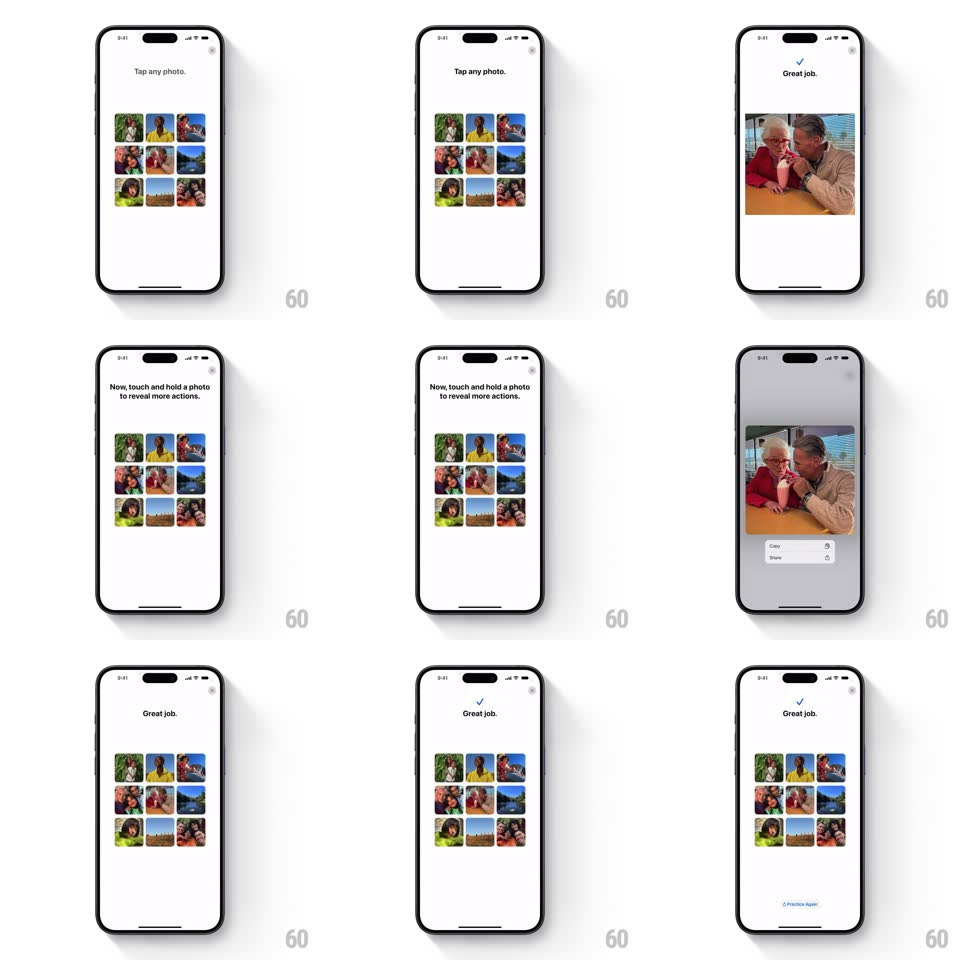

Media
Frame-by-frame

Rebuild this interaction 1:1: Apple's "Practice Key Gestures" photo tutorial - the coach screen asks the user to tap a photo (it zooms full-width with a spring), then to touch and hold a photo, which dims the screen and raises a context menu (Copy, Share) under the lifted photo, ending on a "Great job." state with a Practice Again link.

Rebuild this interaction 1:1: Apple's "Practice Key Gestures" photo tutorial - the coach screen asks the user to tap a photo (it zooms full-width with a spring), then to touch and hold a photo, which dims the screen and raises a context menu (Copy, Share) under the lifted photo, ending on a "Great job." state with a Practice Again link.
## Integration
Integration: stack-agnostic spec - springs given as stiffness/damping, timed motions as duration + curve; map every value to your framework and animation library of choice.
## Scene
White tutorial screen with a 3x3 grid of family photos under the instruction "Tap any photo." Later the instruction changes to "Now, touch and hold a photo to reveal more actions." Success shows a blue check and "Great job." above the grid, plus a "Practice Again" text button at the bottom.
## Motion spec
Pattern: guided gesture tutorial with two gesture phases.
- Tap phase: tapped photo scales from grid cell to a large centered preview (spring ~300/22, ~350ms, anchored on the cell); a green check + "Great job." fades in (200ms), then the photo springs back into its cell.
- Hold phase: after ~400ms of touch, the photo lifts (scale 1 -> 1.05, 200ms), the background dims to ~40% black, and a white context menu pops in below the photo (scale 0.8 -> 1 from its top edge, spring ~360/24) with Copy and Share rows.
- Releasing dismisses the menu (fade 150ms) and the photo settles back; the success state returns with the check + "Great job.".
## Calibration
- The lift (scale 1.05) must precede the menu by a beat - the photo rises, then the menu appears.
- Background dim covers the whole screen including the instruction text; only the held photo and menu stay lit.
## Reduced motion
Photo crossfades to preview and back; menu appears/disappears with a 150ms fade, no scale.
## Don't miss
- The instruction line changes between phases ("Tap any photo." -> "Now, touch and hold...") - the copy is part of the choreography.
- The context menu has exactly two rows (Copy, Share) with right-aligned icons.